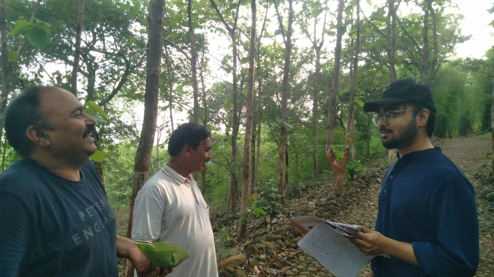
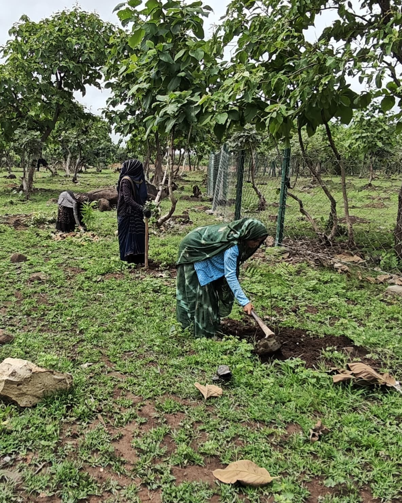
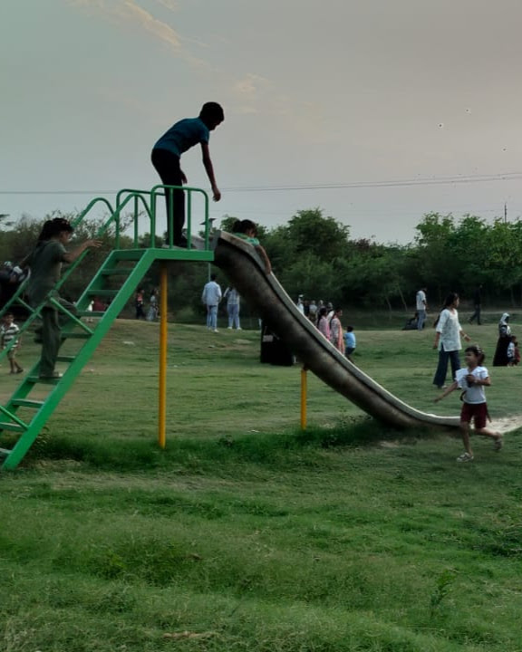
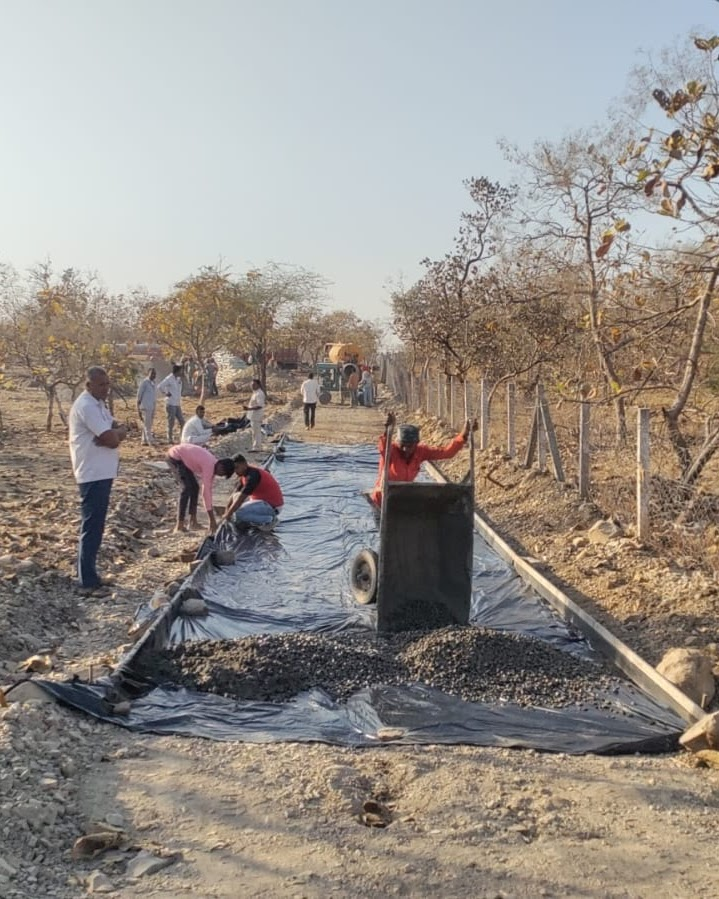
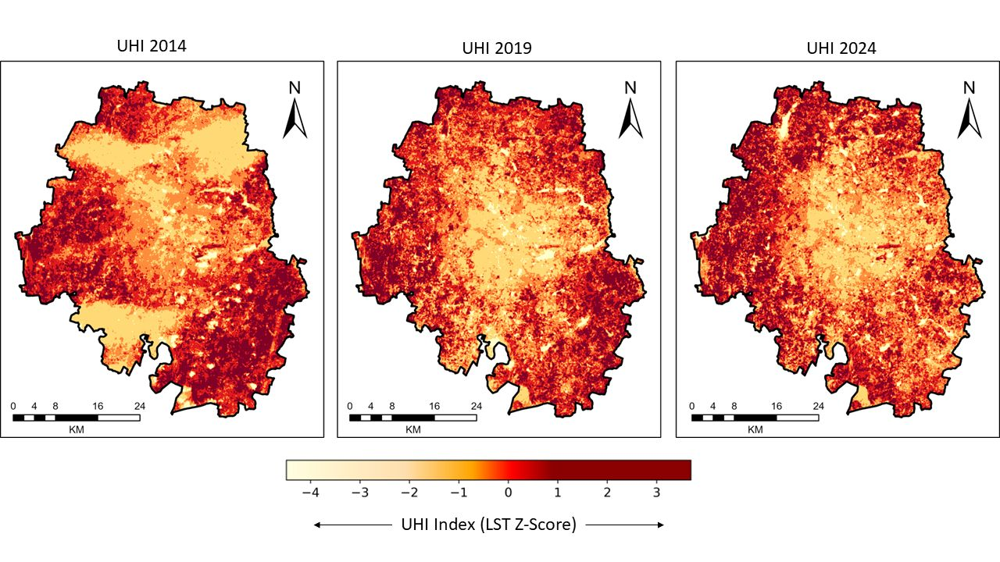

Systemic Bio-Inequity in India: Exploring the Biodiversity–Poverty Paradox
Independent Research Note · Environmental justice
justiceOpen →Research
Verified work only — current research, projects and writing. Where only a title is confirmed so far, the entry says so.

Ongoing
Evaluating the socio-economic, psychological and governance outcomes of the Nagar Van Yojana — GIS-based audits, surveys and well-being assessments towards a monitoring framework. Methodology shown; findings follow as confirmed.
Independent Research Note · Environmental justice
justiceOpen →GIS-based audits · Socio-economic surveys · Well-being assessments
environmentOpen →Integrated multi-analysis methodological framework
environmentOpen →M.Sc. dissertation · Bengaluru · Full case study →
climateOpen →SSRN Working Paper · Policy Brief · Sep 2026
environmentOpen →SSRN Working Paper · Research Case Study · Sep 2026
environmentOpen →Question of Cities · 4 September 2026
environmentOpen →CSR Times · August 2026 · Opinion
environmentOpen →Article / Commentary · Publication details to be confirmed
environmentOpen →No entries here yet.
Try “forestry”, “Bengaluru” or “policy” — or clear the filters. New work appears here as it is confirmed.
Fieldwork / Visual documentation
A selection of field photographs documenting plantation activity, site maintenance and community use of urban green spaces.

.jpg)


Visual research index
Explore environmental questions through the maps, figures and field evidence behind my research. Each visual focuses on a specific question, with its data or methodology explained alongside it.

Three April snapshots of Bengaluru's surface-temperature pattern, expressed as z-scores so each year is comparable. Read alongside vegetation and built-up maps, they show how thermal hotspots sit within the city's changing green and built fabric.
Fourteen Nagar Van and Nagar Vatika sites, assessed through surveys, interviews, transect walks and geospatial checks — asking what keeps a green space useful after planting day.
State-level maps and correlations exploring the biodiversity–poverty paradox: rich ecosystems alongside poorer communities.
Write with context — I read everything and reply within a few days.
.png){kind=link}